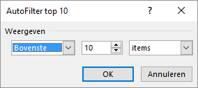
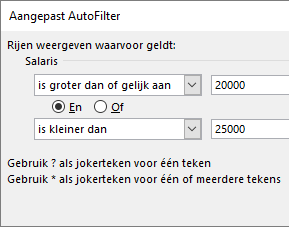

Bij het filteren van een tabel worden alleen die records getoond die
aan bepaalde voorwaarden voldoen. De andere records worden verborgen.
Bestand:Personeel.xlsx
Open het hulpbestand.
Selecteer een willekeurige cel in het gegevensgebied.
Zet het gegevensbereik om naar een tabel.
Klik op de pijl naast de veldnaam Divisie en selecteer
alleen Kopieerapp., dan OK.
Alleen de records voor de divisie Kopieerapp. worden nu getoond. De
filterpijl bij kolomlabel Divisie is gewijzigd in het filtersymbool
Verfijn de selectie door nu op de afdeling Accounting te filteren.
In de statusbak onderaan wordt getoond hoeveel records er zijn
gevonden.
Wis het filter via Gegevens > Wissen (groep Sorteren en filteren).
Wanneer de inhoud van een veld uit getallen bestaat kunnen er specifieke
filteracties worden uitgevoerd. Dergelijke filters vallen onder de categorie
Getalfilters. In het volgende voorbeeld wordt hiervan gebruik
gemaakt om de top 10 van de salarissen te bepalen.
Klik op de pijl naast de veldnaam Salaris en kies Getalfilters > Top 10....
Figuur 1: Dialoogvenster Autofilter top 10

Tip: In dit venster zijn drie keuzemogelijkheden:
Bovenste of Onderste
Willekeurige getal voor het aantal
Procent of Items
Klik OK.
De tien records met het hoogste salaris worden nu getoond.
Wis het filter via Gegevens > Wissen (groep Sorteren en filteren).
Wanneer je op de getalvelden andere filters wilt gebruiken dan de filters die
standaard worden aangeboden, zul je gebruik moeten maken van een aangepast
filter. In het volgende voorbeeld wordt hiervan gebruik gemaakt om de records te
tonen van alle personen met een salaris van € 20.000 tot € 25.000.
Klik op de pijl naast de veldnaam Salaris en kies Getalfilters > Aangepast filter ....
Het dialoogvenster Aangepast Autofilter verschijnt
waarin je de voorwaarden voor de filtering kunt invoeren.
Maak de volgende twee voorwaarden voor het salaris.
Figuur 2: Dialoogvenster Aangepast Autofilter met twee
voorwaarden

Klik op OK.
10 records worden gevonden.
Wis het filter via Gegevens > Wissen (groep Sorteren en filteren).
Wanneer de inhoud van een veld uit datums bestaat kunnen specifieke filteracties
voor datums worden uitgevoerd. Dergelijke filters vallen onder de categorie
Datumfilters. In het volgende voorbeeld wordt hiervan gebruik
gemaakt om de records te vinden met een begindatum in september.
Klik op de pijl naast de veldnaam Begindatum en kies Datumfilters > Alle datums in de periode > september.
11 records worden gevonden.
Wis het filter via Gegevens > Wissen (groep Sorteren en filteren).